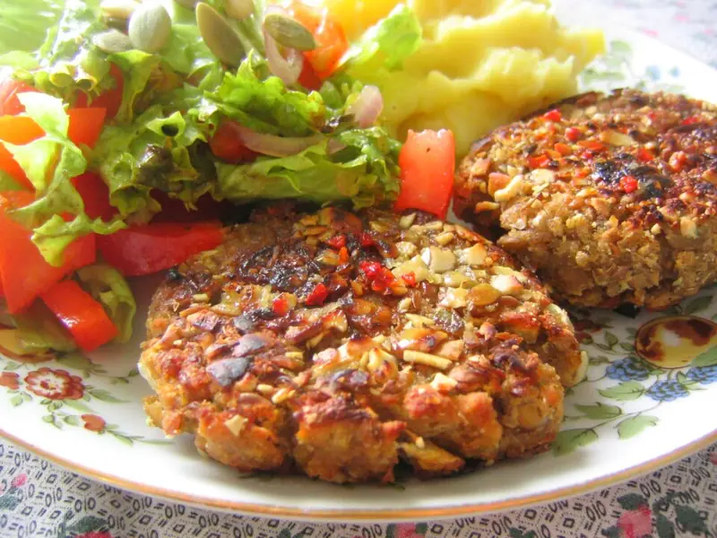

Фото: https://www.flickr.com/photos/rusvaplauke/, CC BY 2.0

Котлеты из чечевицы
Постные котлеты из красной чечевицы с луком и морковью
50 мин4 порц.428 ккал на порциюБ 18 · Ж 17 · У 49Интернациональная кухня
Продукты на 4 порц.
- Чечевица красная1,25 стак.
- Вода2,5 стак.
- Лук репчатый1 шт
- Морковь1 шт
- Чеснок2 зуб.
- Овсяные хлопья4 ст. л.
- Панировочные сухари4 ст. л.
- Зира0,5 ч. л.
- Паприка0,5 ч. л.
- Соль1 ч. л.
- Перец чёрный молотыйпо вкусу
- Растительное масло4 ст. л.
- Петрушка по желаниюпо вкусу
Как готовить
- Промойте чечевицу, залейте водой и варите на среднем огне 15 минут, пока она не разварится и вода не впитается.
- Мелко нарежьте лук, морковь натрите на мелкой тёрке. Обжарьте на 1 ст. л. масла на среднем огне 5 минут до мягкости.
- Смешайте горячую чечевицу с овощами, хлопьями, рубленым чесноком, специями и петрушкой. Разомните толкушкой.
- Оставьте массу на 10 минут, чтобы хлопья набухли и она загустела.
- Мокрыми руками слепите котлеты толщиной 1,5 см и обваляйте в сухарях.
- Жарьте на оставшемся масле на среднем огне по 3-4 минуты с каждой стороны до румяной корочки.
Совет. Если котлеты разваливаются, добавьте ещё 1-2 ложки хлопьев и дайте массе остыть: холодная держит форму лучше. Переворачивайте только когда низ схватится корочкой.